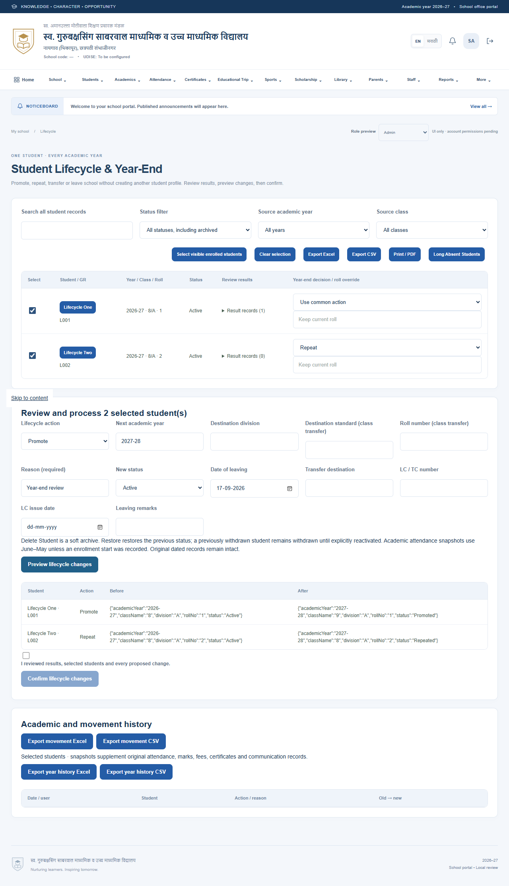
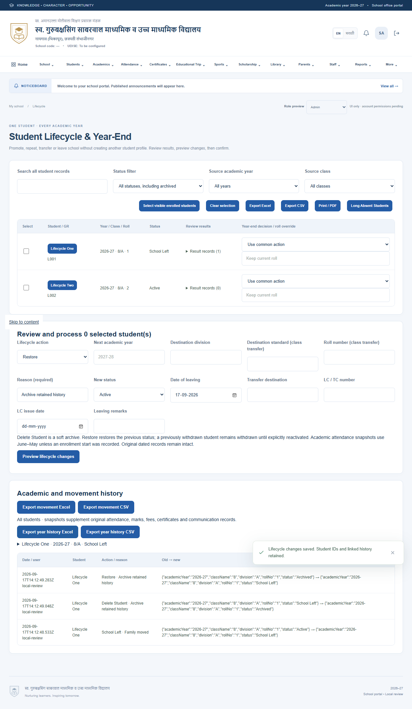
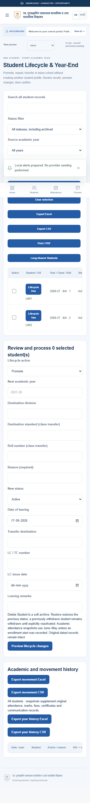
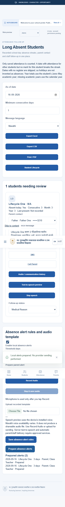

GBS SCHOOL · LOCAL WORKFLOW REVIEW
One student, every academic year
Promotion, repeat, leaving school and archive retain the same Student Master identity and linked history.
Open local portal · Read workflow notes
Fictional test records. No live messages sent. Permanent deletion is locked pending verified Super Admin permissions. Browser speech is a listening preview; record or upload audio for sharing.
Year-end preview

Review marks and before/after values. Confirm a mixed class decision without duplicating profiles.
Retained movement history

School-left, soft delete and restore records remain available alongside academic snapshots.
Mobile lifecycle

Status search, class selection, exports and reviewed actions.
Long absence follow-up

Saved absence counts, parent links, Marathi messages, audio and staff alert drafts.